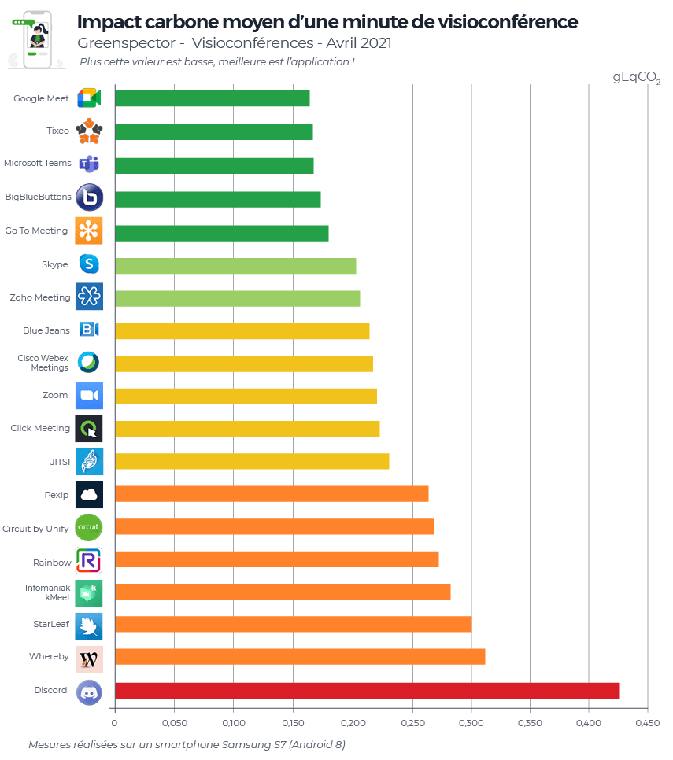
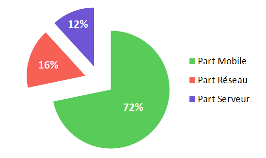
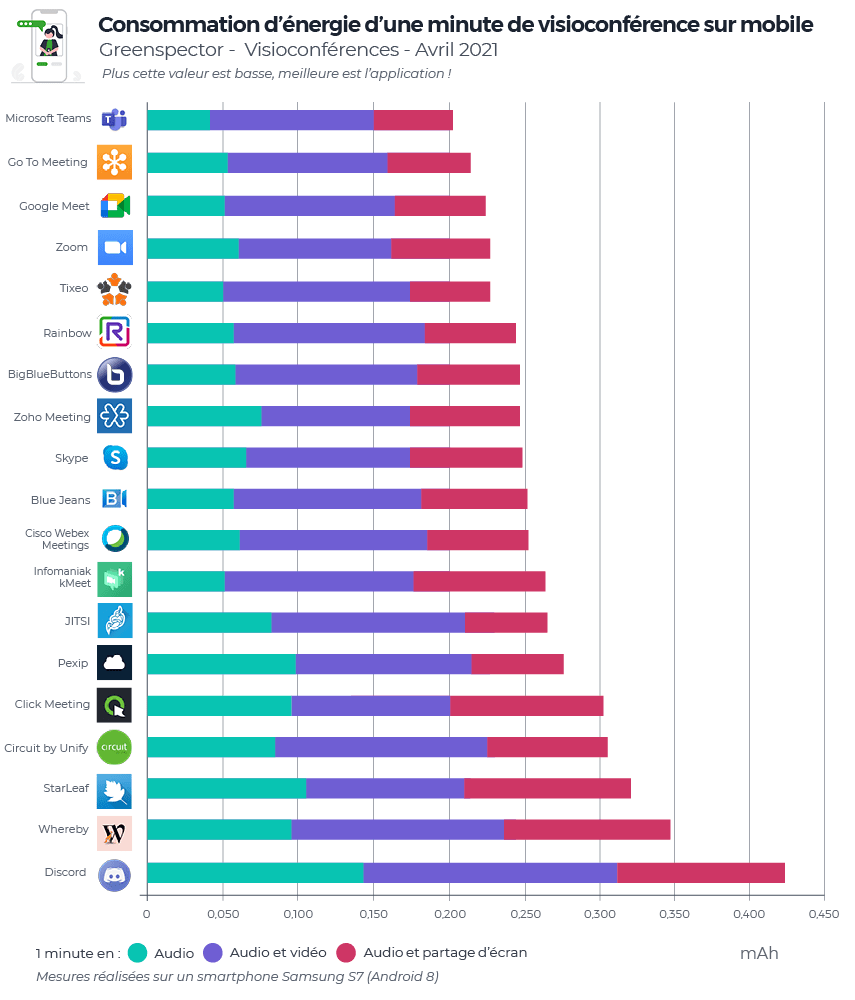
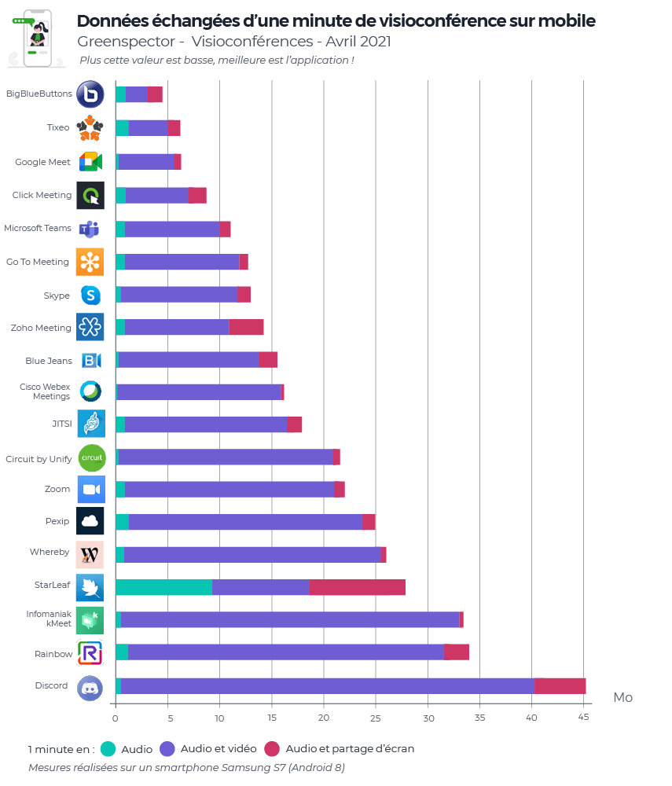

Nous vous proposons de consulter l’édition de 2022. Disponible ici.
Pour cette nouvelle édition 2021 de notre classement, nous avons complété notre étude de 2020 avec de nouvelles solutions et même élargi à des solutions web voire même à une solution dont l’objectif principal n’est pas de faire de la visioconférence mais qui intègre cette fonctionnalité. L’objectif de ces mesures est de voir comment les solutions se situent en termes d’impact environnemental (Carbone) les unes par rapport aux autres sur des scénarios utilisateurs courants mais aussi de donner des repères sur nos usages de la visioconférence.
Nous avons donc comparé cette fois-ci 19 applications mobile : Big Blue Button, BlueJeans, Circuit by Unify, Cisco Webex Meetings, ClickMeeting, Go To Meeting, Discord, Google Meet, Infomaniak kMeet, Jitsi, Pexip, Rainbow, Skype, StarLeaf, Microsoft Teams, Tixeo, WhereBy, Zoho Meeting et Zoom.

Pour chacune de ses applications, mesurées sur un smartphone S7 (Android 8), les trois scénarios suivants ont été réalisés au travers de notre Greenspector Test Runner, permettant la réalisation de tests manuels sur une durée de 1 minute en one-to-one :
- Conférence audio uniquement
- Conférence audio et vidéo (caméra activée de chaque côté)
- Conférence audio et partage d’écran
En savoir plus sur la méthodologie.
Classement projeté en impact carbone des applications de visioconférence (gEqCO2)

Voici les moyennes d’impact pour les trois scénarios :
En moyenne, une minute de visioconférence en audio impacte 61% moins (ou 2,6 fois moins) qu’avec les caméras activées et 5% de moins qu’en partageant un écran. D’après notre récente étude sur l’impact du streaming d’une vidéo MyCanal, en moyenne, une heure de streaming vidéo correspond à un impact de 14g eqCO2. Soit 0,233g eqCO2 par minute, soit 1,7 moins impactant qu’une minute de visioconférence en audio et caméra mais 1,5 fois plus qu’une minute de visioconférence en audio uniquement.
Le Top 3 d’une minute de visioconférence en moyenne : Google Meet (0,164 gEqCO2), Tixeo (0,166 gEqCO2) et Microsoft Teams (0,167 gEqCO2). Google Meet premier de ce classement côté impact carbone impacte 2,5 fois moins que, Discord, le dernier de ce classement. La moyenne de ce classement est de 0,237 gEqCO2, seulement 7 solutions se trouvent au-dessus.
La principale partie des impacts Carbone se situent sur la partie device utilisateur (72%), suivie par la partie Réseau (16%) et enfin la partie Serveur (12%).

Voici les trois applications les moins impactantes en termes de Carbone suivant le scénario :
| Audio (Top 3) | Audio + caméra (Top 3) | Audio + partage d’écran (Top 3) |
|---|---|---|
| Microsoft Teams | Big Blue Buttons (via Chrome) | Microsoft Teams |
| Google Meet | Click Meeting | Go To Meeting |
| Infomaniak Meet | Google Meet | Tixeo |
Consommation d’énergie des applications de visioconférence (mAh)

Voici les moyennes de consommation d’énergie pour les trois scénarios :
| Scénario / Année | 1 mn de visioconférence en audio | 1 mn de visioconférence en audio + caméra | 1 mn de visioconférence en audio + partage d’écran |
|---|---|---|---|
| 2021 | 9,84 mAh | 16,26 mAh | 9,98 mAh |
| 2020 | 6,6 mAh | 14,24 mAh | 7,50 mAh |
En moyenne, une minute de visioconférence en audio consomme 39% moins (ou 1,6 fois moins) d’énergie qu’avec les caméras activées et 1.5% de moins qu’en partageant un écran.
Le Top 3 (tous scénarios confondus) en consommation d’énergie : Microsoft Teams (27,27 mAh), Go To Meeting (28,79 mAh) et Google Meet (30,11 mAh). Microsoft Teams premier de ce classement côté consommation d’énergie consomme 2 fois moins que le dernier de ce classement : Discord.
Voici les trois applications les moins énergivores suivant le scénario :
| Audio (Top 3) | Audio + caméra (Top 3) | Audio + partage d’écran (Top 3) |
|---|---|---|
| Microsoft Teams | Zoho Meeting | Microsoft Teams |
| Tixeo | Zoom | Tixeo |
| Infomaniak kMeet | StarLeaf | Go To Meeting |
Données échangées des applications de visioconférence (Mo)

Voici les moyennes des données échangées pour les trois scénarios :
| Scénario / Année | 1 mn de visioconférence en audio | 1 mn de visioconférence en audio + caméra | 1 mn de visioconférence en audio + partage d’écran |
|---|---|---|---|
| 2021 | 1,15 Mo | 16,01 Mo | 1,87 Mo |
| 2020 | 0,806 Mo | 8,44 Mo | 1,43 Mo |
C’est sur la consommation de données que les écarts se creusent entre les outils et les usages.
En moyenne, une minute de visioconférence en audio consomme 92% moins (ou 14 fois moins) de données échangées qu’avec les caméras activées et 38% de moins qu’en partageant un écran.
Le Top 3 (tous scénarios confondus) en consommation d’énergie : Big Blue Buttons (4,49 Mo), Tixeo (6,21 Mo) et Google Meet (6,30 Mo). Big Blue Buttons (via Chrome) premier de ce classement côté données échangées en consomme 10 fois moins que le dernier de ce classement : Discord.
Voici les trois applications les moins consommatrices de données suivant le scénario :
| Audio (Top 3) | Audio + caméra (Top 3) | Audio + partage d’écran (Top 3) |
|---|---|---|
| Cisco Webex Meetings | Big Blue Buttons | Cisco Webex Meetings |
| Blue Jeans | Tixeo | Infomaniak kMeet |
| Google Meet | Google Meet | Google Meet |
Et pour nos usages au quotidien de la visioconférence :
Tout comme notre première étude, nous vous conseillons lors de vos conférences en ligne de :
Favorisez l’audio uniquement lors de vos réunions : le flux vidéo (caméra) aura tendance à consommer beaucoup plus. Une séance sur mobile est en moyenne 2,6 fois plus impactante pour l’environnement en impact carbone quand on ajoute la vidéo à l’audio. Ajouter un partage d’écran n’est pas trop pénalisant s’il est utile.
Optimisez les paramètres (quand c’est possible) : adoptez le thème sombre, activez les paramètres d’économie de données ou d’énergie (cas des écrans de type LED, AMOLED).
Préférez la visioconférence par rapport à un déplacement en voiture !
– Comparaison pour 2 personnes qui se parlent en séance de 3 heures en audio et caméras actives (0,403 gEqCO2 par minute) alors qu’un des deux a effectué 20 kms (112 gEqCO2 / km en France) aller-retour pour un face à face.
– En visioconférence : 180*0,403*2 = 145 gEqCO2
– En voiture : 112*20 = 2,4 kg EqCO2 soit environ, 16x plus d’impact.
Versions mesurées : Big Blue Button via Chrome (87.0.4280.101), BlueJeans (45.0.2516), Circuit by Unify (1.2.5102), Cisco Webex Meetings (41.2.1), ClickMeeting (4.4.6), Go To Meeting (4.6.0.7), Discord (62.5), Google Meet (2021.01.24.355466926), Infomaniak kMeet (2.2), Jitsi (20.6.2), Pexip (3.4.6), Rainbow (1.84.1), Skype (8.68.0.97), StarLeaf (4.4.29), Microsoft Teams (1416.1.0.0.2021020402), Tixeo (16.0.1.2), WhereBy (2.3.0), Zoho Meeting (2.1.4) et Zoom (5.5.2.1328).
Pour chacune de ses applications, mesurées sur un smartphone S7 (Android 8), les scénarios utilisateurs ont été réalisés au travers de notre Greenspector Test Runner, permettant la réalisation de tests manuels.
Une fois l’application téléchargée et installée, nous exécutons nos mesures sur les paramètres de base et d’origine de l’application. Aucune modification n’est réalisée (même si certaines options permettent de réduire la consommation d’énergie ou ressources : mode économie de données, thème sombre etc. Cependant nous vous encourageons à vérifier les paramètres de votre application favorite afin d’en optimiser l’impact.
Chaque mesure est la moyenne de 5 mesures homogènes (avec un écart-type faible). Les consommations mesurées sur le smartphone donné selon un réseau de type Wi-Fi peuvent être différentes sur un PC portable avec un réseau filaire par exemple. Pour chacune des itérations, le cache est préalablement vidé.
Découvrez comment Greenspector évalue l’empreinte environnementale de l’utilisation d’un service numérique. (Méthodologie complète)